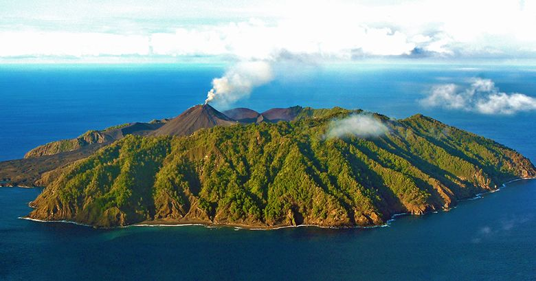

Sightseeing
Most tourists spend most of their time in Taniti City, which boasts native architecture and nearby white, sandy beaches that encircle Yellow Leaf Bay. Other popular activities include boat or bus tours of the island, hikes in the rainforest, or visits to Taniti’s active volcano.
